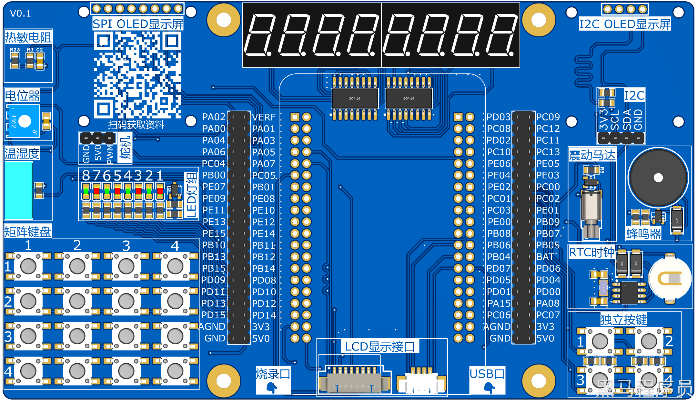
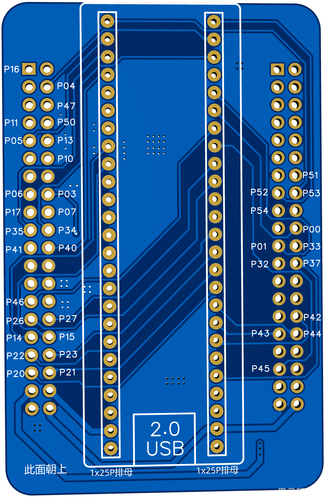

<!DOCTYPE lake>
<h2 data-lake-id="YTcpS" id="YTcpS"><span data-lake-id="u5f147746" id="u5f147746">扩展板</span></h2><p data-lake-id="ubdb88e19" id="ubdb88e19"></p><h2 data-lake-id="r4b93" id="r4b93"><span data-lake-id="u9f8111ce" id="u9f8111ce">转接板</span></h2><p data-lake-id="u0e938b92" id="u0e938b92"></p><h3 data-lake-id="cmomo" id="cmomo"><span data-lake-id="u75c9be9d" id="u75c9be9d">原理图</span></h3><p data-lake-id="u967d6920" id="u967d6920"><a class="yuque-card-link" href="../../_assets/d5c96d5f0b7f3866a317c41a.pdf">SCH_天空星扩展板.pdf</a></p><p data-lake-id="ub16225a6" id="ub16225a6"><a class="yuque-card-link" href="../../_assets/10e043e01697a9a5b6dff89d.pdf">SCH_STC8转接板.pdf</a></p><p data-lake-id="u0ec05106" id="u0ec05106"><span data-lake-id="u224d746e" id="u224d746e">建议使用二者而成后的原理图：</span></p><a class="yuque-card-link" href="https://www.yuque.com/attachments/yuque/0/2024/pdf/27903758/1722831338368-33526ebe-9f29-4350-9a56-77e9fd9ba70c.pdf">localdoc：SCH_STC8天空星扩展板原理图.pdf</a><h2 data-lake-id="KFDI4" id="KFDI4"><span data-lake-id="ud63d4b6b" id="ud63d4b6b">功能介绍</span></h2><ol list="uacaa89de"><li data-lake-id="uf2cbf148" fid="uf7af902f" id="uf2cbf148"><span data-lake-id="ue2df885d" id="ue2df885d">LED灯</span></li><li data-lake-id="uac16a3e6" fid="uf7af902f" id="uac16a3e6"><span data-lake-id="ub621ee8c" id="ub621ee8c">震动马达</span></li><li data-lake-id="u8d171eb6" fid="uf7af902f" id="u8d171eb6"><span data-lake-id="u4e77d65f" id="u4e77d65f">蜂鸣器</span></li><li data-lake-id="u2dc4c8c1" fid="uf7af902f" id="u2dc4c8c1"><span data-lake-id="u6ad5a075" id="u6ad5a075">电位器</span></li><li data-lake-id="uc6e5c5a1" fid="uf7af902f" id="uc6e5c5a1"><span data-lake-id="u01142f6b" id="u01142f6b">数码管</span></li><li data-lake-id="uf8607ee7" fid="uf7af902f" id="uf8607ee7"><span data-lake-id="u9a99a771" id="u9a99a771">OLED SPI</span></li><li data-lake-id="u7aeb0fbc" fid="uf7af902f" id="u7aeb0fbc"><span data-lake-id="u0485756e" id="u0485756e">OLED I2C</span></li><li data-lake-id="u340bf97f" fid="uf7af902f" id="u340bf97f"><span data-lake-id="ua3d48c1c" id="ua3d48c1c">NTC热敏电阻</span></li><li data-lake-id="u4824b275" fid="uf7af902f" id="u4824b275"><span data-lake-id="ue7040207" id="ue7040207">RTC时钟</span></li><li data-lake-id="u021cc37a" fid="uf7af902f" id="u021cc37a"><span data-lake-id="uf6d2d1b3" id="uf6d2d1b3">温湿度传感器</span></li><li data-lake-id="ufa54baee" fid="uf7af902f" id="ufa54baee"><span data-lake-id="uf90a5aec" id="uf90a5aec">独立按键 x 4</span></li><li data-lake-id="u3acb6458" fid="uf7af902f" id="u3acb6458"><span data-lake-id="u008ef7df" id="u008ef7df">矩阵按键 x 16</span></li><li data-lake-id="u2dc6bbe7" fid="uf7af902f" id="u2dc6bbe7"><span data-lake-id="uf27f1ed1" id="uf27f1ed1">4.7KΩ x 1</span></li><li data-lake-id="uada09695" fid="uf7af902f" id="uada09695"><span data-lake-id="ud38fa64f" id="ud38fa64f">220Ω x 4</span></li><li data-lake-id="ud3e37613" fid="uf7af902f" id="ud3e37613"><span data-lake-id="u94b88f9a" id="u94b88f9a">1KΩ x 2</span></li><li data-lake-id="u04153697" fid="uf7af902f" id="u04153697"><span data-lake-id="u5661acd8" id="u5661acd8">10KΩ x 6</span></li></ol><p data-lake-id="ubd86b032" id="ubd86b032"><span data-lake-id="u0d629fdb" id="u0d629fdb">​</span><br/></p><p data-lake-id="ufc040ed0" id="ufc040ed0"><a class="yuque-card-link" href="../../_assets/d41ba8108202ce159420720f.pdf">SCH_Schematic2_2024-05-22.pdf</a></p><p data-lake-id="udafcf562" id="udafcf562"><span data-lake-id="u03c5a413" id="u03c5a413">​</span><br/></p>